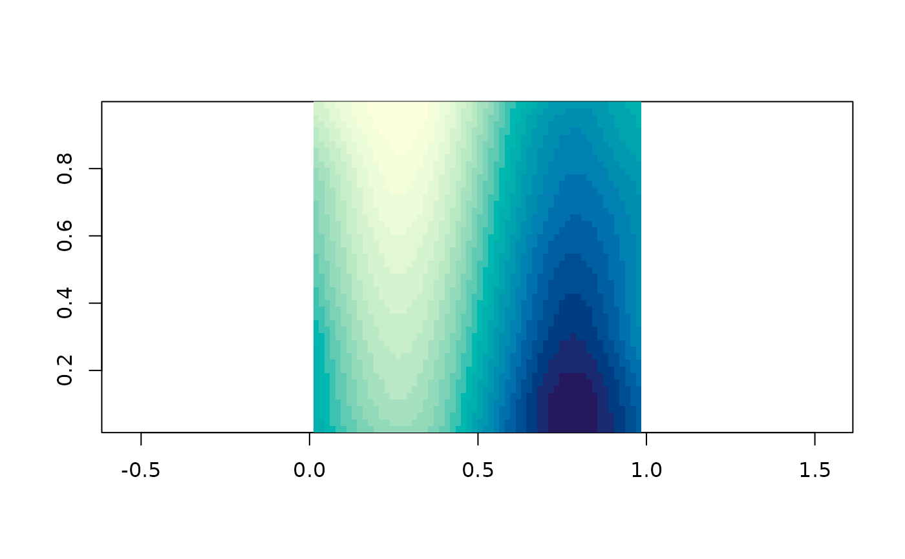
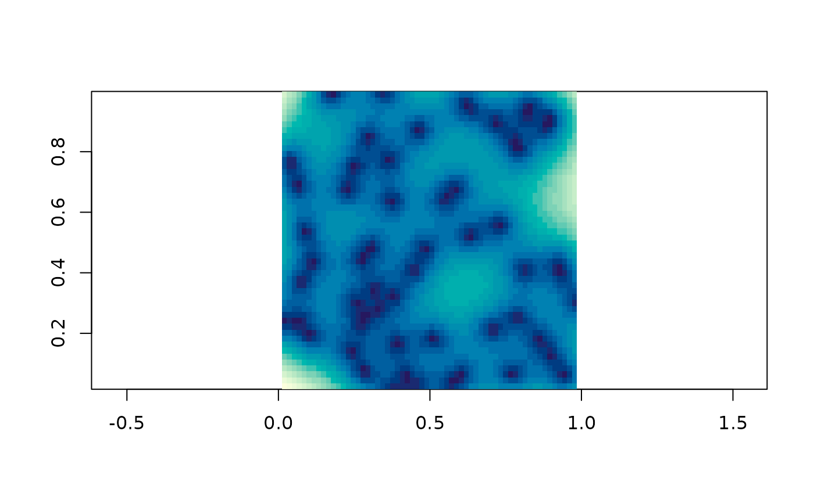

Fit a thin plate spline to the points with fields::Tps() and evaluate it
at every cell.
Usage
grid_tps(
x,
value = NULL,
grid = NULL,
statistic = c("prediction", "se"),
lon.lat = FALSE,
...
)Arguments
- x
coordinates, or coordinates carrying their value as z; see
xyz_input()- value
one value per coordinate, or
NULLto use the z ofx- grid
a
grid_spec()to interpolate onto, orNULLfor a default one- statistic
"prediction"for the fitted surface,"se"for its standard error- lon.lat
the coordinates are longitude and latitude, so distances should be great circle ones; passed to
fields::Tps()- ...
passed to
fields::Tps(), for instancelambdaorm
Details
A thin plate spline is the surface that passes near the data while bending
as little as possible, with a smoothing parameter deciding the trade between
those two. It is the engine behind GDAL's -tps warping, so this is also
what happens when you georeference an image from ground control points.
Unlike grid_barycentric() it fills the whole grid, including cells far
outside the data, where the answer is extrapolation and should be read as
such. statistic = "se" is how it tells you that: the standard error grows
with distance from the data, so the two surfaces together say both what the
method thinks and where it is guessing.
lon.lat is the one place in this package where what the coordinates mean
changes the arithmetic. A spline bends in the plane of its coordinates, and
a degree of longitude is not a degree of latitude anywhere but the equator.
It is not guessed from the crs, because the guess would be wrong exactly
when it mattered; say what you have.
Examples
xy <- cbind(runif(60), runif(60))
v <- sin(xy[, 1] * 6) + xy[, 2]
if (requireNamespace("fields", quietly = TRUE)) {
plot(grid_tps(xy, v))
## and where it is guessing
plot(grid_tps(xy, v, statistic = "se"))
}
#> Warning:
#> Grid searches over lambda (nugget and sill variances) with minima at the endpoints:
#> (GCV) Generalized Cross-Validation
#> minimum at right endpoint lambda = 7.880521e-06 (eff. df= 56.99962 )

#> Warning:
#> Grid searches over lambda (nugget and sill variances) with minima at the endpoints:
#> (GCV) Generalized Cross-Validation
#> minimum at right endpoint lambda = 7.880521e-06 (eff. df= 56.99962 )
